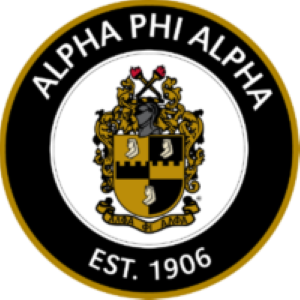
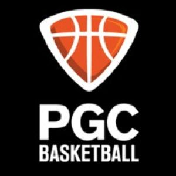

National Mentoring Programs

Alpha Phi Alpha is the first intercollegiate fraternity founded by African American men. The fraternity's efforts include voter engagement, mentoring, education, and elder care.
The mission statement of Alpha Phi Alpha Fraternity, Inc. is to develop leaders, promote academic excellence and brotherhood, and advocate for communities.
- Manly Deeds
- Scholarship
- Love for All Mankind
Youth Basketball Coaching

3 decades of coaching up-and-coming players at our summer camps exploited a huge gap in the game, and believe it or not, that gap is joy. Year after year we help players maximize their experience by finding joy and richness in the game only to have it crushed when they return to their team. Why? Too many coaches are struggling, they’re serving multiple masters (the team, players, parents, admin…) This struggle causes sleepless nights and a painful amount of stress. Not only is this stripping coaches of joy but it’s having a ripple effect on their players—and this expands far beyond the court.
- Passion
- Purpose
- Impact
J&J Leadership Academy
We empower our male youth members to think outside the box and lead within the paths of their choices, thus working towards having a plan for present and future success.
To whom much is given, much is required! Our younger members will grow into becoming High School Ambassadors/peer mentors, meaning that they give back to the younger members of the program and receive additional leadership training and opportunities to showcase what they have learned.
- Brotherhood
- Consistency
- Service